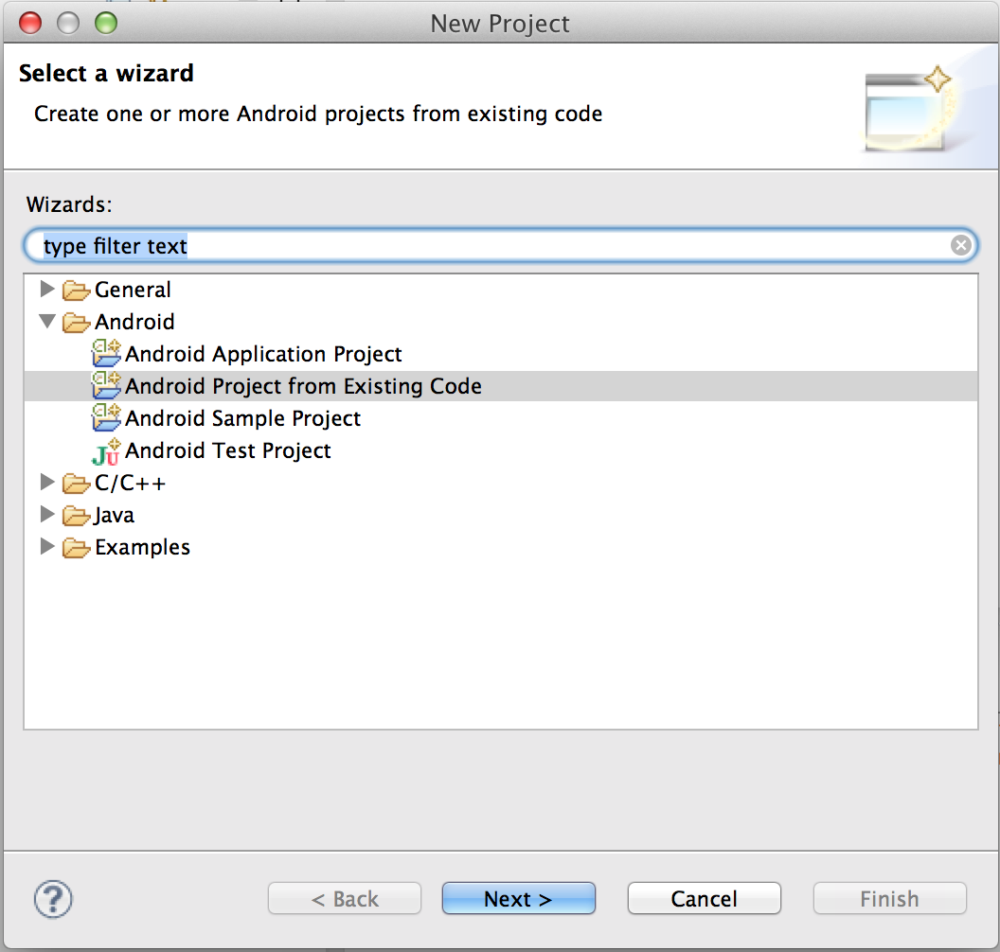
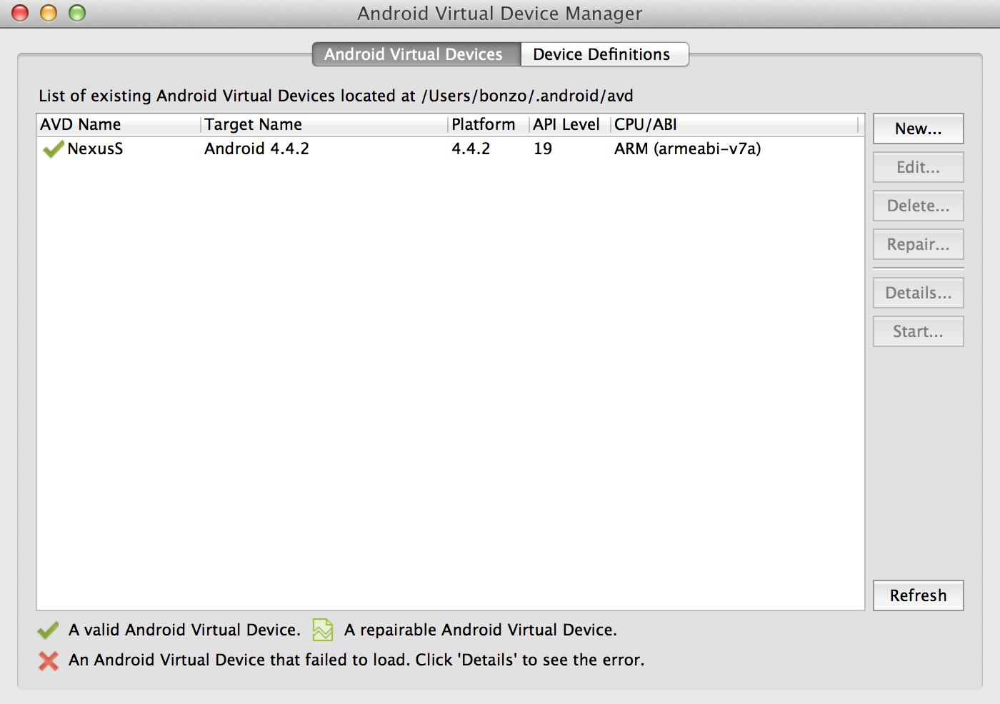
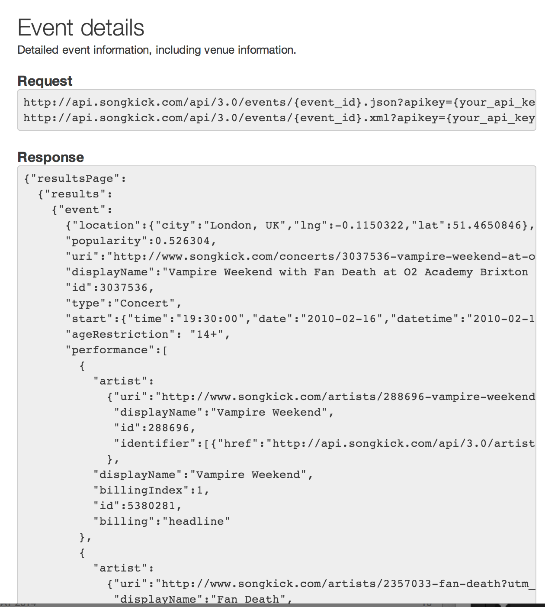
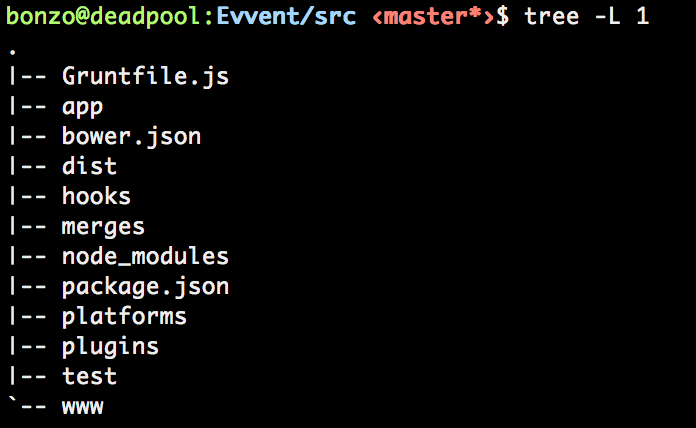
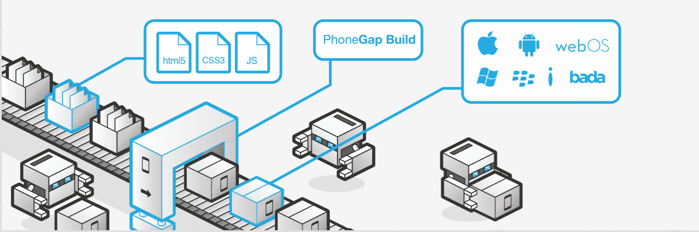

Building Mobile Applications
withHTML/Js/Css
andPhonegap
Program
- Native vs Cross platform
- Phonegap Architecture
- Javascript - Css - Html
- jQuery Mobile
- Yeoman workflow for webapps
- Development Phonegap
- Phonegap build
- AppStore - Google Play
Matteo Magni
Twitter @ilbonzo
Github @ilbonzo
Yeah!
Advantages
- write one application
- support different mobile platforms and web
- exploit knowledge of web technologies
- can use sensors and native features of the phone
- can publish on store
mmm?
Disadvantages
- performance
- lack of widget UI
- Identical UX on all platforms
- larger executable size
Alternative
- PhoneGap (HTML/JS)
- Appcelerator Titanium (JS)
- Corona SDK (lua)
- Marmalade (Visual C++)
Cordova vs Phonegap
"PhoneGap is a distribution of Apache Cordova. You can think of Apache Cordova as the engine that powers PhoneGap, similar to how WebKit is the engine that powers Chrome or Safari.
(Browser geeks, please allow me the affordance of this analogy and I’ll buy you a beer later.)"
html, css and javascript.
100% width and 100% height
Phonegap workflow

support platform
- iOS
- Android
- Windows 8
- Windows Phone 7 and 8
- BlackBerry 5.x+
- WebOS
- Symbian
- Tizen
- Ubuntu

platform details for simulator
- Android emulator on Linux, Windows, OSx
- iOS only in OSx
- Blackberry on Windows and OSx
- Windows Phone on Windows
Ripple
Html5
- WebSQL
- XHR
- <audio>
- <video>
Viewport
The viewport meta tag The viewport meta tag was introduced by Apple with iOS 1.0 and is largely supported in all the major mobile browsers. When a web page doesn't fit the size of the browser, the default behavior of a mobile browser is to scale it. The viewport meta tag is what you need in order to have control over this behavior.
jQuery
"jQuery: The Write Less, Do More, JavaScript Library"
"jQuery is defintely the way"
Performance
I use jQuery and I love it, but I will not advise the use of jQuery when building a hybrid multi-page app. Also, if the jQuery library is downloaded once, the file is parsed each time it's included in an HTML page. Performance on mobiles is crucial. If you don't seriously consider optimizing each aspect of your app, you risk losing users. Bad performance can also lead to high battery consumption.
Single Page Web App
-
when
- frequently navigation
- the pages change partially
- critical performance
Optimization
- use sprite css
- restrict access to the dom
WTF???
alternative to jQuery Mobile
jQuery Mobile layout

Buttons

list

navigation

forms

HTML5 Markup-driven configuration makes it easy to learn
Data Attributes
<div data-role="page">
<div data-role="header">...</div>
<div role="main" class="ui-content">...</div>
<div data-role="footer">...</div>
</div>
-
Nostro tema
Evvent demo app
https://github.com/ilbonzo/Evvent

Evvent
- events list
- event view
- layout
- ...
-
develop a prototype
Frontend developer
- code organization
- repetitive tasks
- tool and librery dependency

backbonejs.org
" JavaScript library with a RESTful JSON interface and is based on the model–view–presenter (MVP) application design paradigm"
MV* framework
- Routing
- Model
- View
- Template
- Collection
Single page webapp
Alternative
Backbonejs routing
routes: {
'': 'home',
'events': 'events',
'events/:id': 'getEvent'
},
// Home method
home: function() {
var home = new HomeView({'el': '#content'});
},
// events method
events: function() {
var events = new EventsView({'el': '#content'});
},
backbonejs model
var EventModel = Backbone.Model.extend({
defaults: {
id: '',
title: '',
date: ''
}
});
backbonejs view
var EventView = Backbone.View.extend({
template: JST['app/scripts/templates/event.ejs'],
});
javascript template
https://code.google.com/p/trimpath/wiki/JavaScriptTemplates<h2>Event View</h2>
<p>Evento con id: <%= id %></p>
package.json
{
"name": "evvent-web",
"version": "0.0.0",
"dependencies": {},
"devDependencies": {
"grunt": "~0.4.1",
"grunt-contrib-copy": "~0.4.0",
"grunt-contrib-concat": "~0.3.0",
"grunt-contrib-coffee": "~0.7.0",
"grunt-contrib-jst": "~0.5.0"
},
"engines": {
"node": ">=0.8.0"
}
}
$ npm install
$ npm update
GRUNT
+
BOWER
+
YEOMAN
Yeoman
yeoman.ioTHE WEB'S SCAFFOLDING TOOL FOR MODERN WEBAPPS$ npm install -g yo
Grunt
npm install -g grunt
Gruntfile.js
module.exports = function (grunt) {
// show elapsed time at the end
require('time-grunt')(grunt);
// load all grunt tasks
require('load-grunt-tasks')(grunt);
...
}
npm install -g grunt-cli
# grunt installato per ogni progetto
npm install grunt
Grunt plugin
- copy
- concat
- cssmin
- uglify
grunt
$ grunt serve
bower.json
Bower
{
"name": "evvent-web",
"version": "0.0.0",
"dependencies": {
"jquery": "~1.9.0",
"underscore": "~1.4.3",
"backbone": "~1.0.0",
"requirejs": "~2.1.5",
"requirejs-text": "~2.0.5",
"modernizr": "~2.6.2",
},
"devDependencies": {}
}
.bowerrc
{
"directory": "app/bower_components"
}
Example
https://github.com/ilbonzo/Evvent/tree/master/example-
Yeoman generator
- github.com/bauschan/generator-jquery-mobile
-
npm install -g generator-jquery-mobile - evvent.dev:9001
-
- github.com/yeoman/generator-backbone
-
npm install -g generator-backbone - evvent.dev:9002
-
Example
https://github.com/ilbonzo/Evvent/tree/master/example- github.com/yeoman/generator-mobile
-
npm install -g generator-mobile - evvent.dev:9003
-
- www.npmjs.org/package/generator-phonegap
npm install -g generator-phonegap
- evvent.dev:9004
Altre utility
- Underscore
- requirejs
- Requirejs-text
- Modernizr
requirejs
<!DOCTYPE html>
<html>
<head>
<title>My Sample Project</title>
<!-- data-main attribute tells require.js to load
scripts/main.js after require.js loads. -->
<script data-main="scripts/main"
src="scripts/require.js"></script>
</head>
<body>
<h1>My Sample Project</h1>
</body>
</html>
main.js
require.config({
shim: {
underscore: {
exports: '_'
},
...
},
paths: {
underscore: '../bower_components/underscore/underscore',
...
}
});
Partiamo dal generator-backbone
https://github.com/yeoman/generator-backbone
Aggiungiamo jquery mobile
https://github.com/jobrapido/jquery-mobile-bower{
"name": "evvent-web",
"version": "0.0.0",
"dependencies": {
"jquery": "~1.9.0",
"underscore": "~1.4.3",
"backbone": "~1.0.0",
"requirejs": "~2.1.5",
"requirejs-text": "~2.0.5",
"modernizr": "~2.6.2",
---
"jquery-mobile-bower" : "latest"
---
},
$ bower update
aggiungiamo a requirejs
/*global require*/
'use strict';
require.config({
shim: {
...
jquerymobile: {
deps: [
'jquery'
],
exports: 'jqm'
}
},
paths: {
....
jquerymobile:
'../bower_components/jquery-mobile-bower/
js/jquery.mobile-1.4.2'
}
});
require([
'backbone', 'jquerymobile'
], function (Backbone) {
Backbone.history.start();
});
add css and data attributes
# index.html
<link rel="stylesheet"
href="bower_components/jquery-mobile-bower/
css/jquery.mobile-1.4.2.css”>
<div data-role="page" data-theme="a" id="index">
<div data-role="header">
<h1>Evvent</h1>
</div>
</div>
strict mode
strict modeConverting mistakes into errors
Non-strict mode |
Strict mode |
|
|
throws ReferenceError"Strict mode forbids implicit creation of global property 'a'" |
Non-strict modeYOLO mode |
Strict mode |
|
|
throws ReferenceError"Can't find variable: a" |
Backbone structure

Yeoman scaffolding
vagrant@precise64:/workspace/evvent-web$ yo backbone:router app
create app/scripts/routes/appRouter.js
Home
vagrant@precise64:/workspace/evvent-web$ yo backbone:view home
create app/scripts/templates/home.ejs
create app/scripts/views/home.js
Event
vagrant@precise64:/workspace/evvent-web$ yo backbone:model event
create app/scripts/models/event.js
vagrant@precise64:/workspace/evvent-web$ yo backbone:view event
create app/scripts/templates/event.ejs
create app/scripts/views/event.js
Events
vagrant@precise64:/workspace/evvent-web$ yo backbone:collection events
create app/scripts/collections/events.js
vagrant@precise64:/workspace/evvent-web$ yo backbone:view events
create app/scripts/templates/events.ejs
create app/scripts/views/events.js
json for data
[
{
"id": "53133a5de974d00e11e858af",
"title": "Nine Inch Nails",
"date": "19/09/2014",
"image": "nin.jpg"
},
{
"id": "53133a5de974d00e11e85eaf",
"title": "Mad Season",
"date": "20/10/2014",
"image": "mad-season.jpg"
},
...
]
json for single event
{
"id": "53133a5de974d00e11e858af",
"title": "Nine Inch Nails",
"date": "19/09/2014",
"image": "nin.jpg"
}
Development PhoneGap app
Phonegap Architecture
cli
Cordova Cli
https://github.com/apache/cordova-cli
$ npm install -g cordova
$ npm install -g cordova
Cordova Cli
$ cordova create evvent-cordova com.ilbonzo.evvent "Evvent"
$ cd evvent-cordova
Cordova Cli tree

Phonegap Cli
https://github.com/phonegap/phonegap-cli
$ npm install -g phonegap
$ npm install -g phonegap
Phonegap Cli
$ phonegap create evvent-phonegap com.ilbonzo.evvent "Evvent"
$ cd evvent-phonegap
Phonegap Cli tree

Simulators
iOS
iOS
Cordova
$ cordova platform add ios
iOS
-
$ cordova prepare [platform...] -
copies files into the specified platforms, or all platforms. It is then ready for building by Eclipse, Xcode, etc.
-
$ cordova build [[ [...]]] -
an alias for cordova prepare followed by cordova compile
run ios project
Once created, you can open it from within Xcode. Double-click to open the evvent-cordova/platforms/ios/Evvent.xcodeproj file.
emulate
-
$ cordova emulate [[ [...]]] -
launch emulators and deploy app to them. With no parameters emulates for all platforms added to the project, otherwise emulates for the specified platforms
ios-deploy

ios-deploy
Install and debug iPhone apps from the command line, without using Xcodehttps://github.com/phonegap/ios-deploy
-
$ npm -g install ios-deploy
ios-sim

ios-sim
Command-line application launcher for the iOS Simulatorhttps://github.com/phonegap/ios-sim
-
$ npm -g install ios-sim # or $ brew install ios-sim
serve
-
$ cordova serve [port] -
launch a local web server allowing you to access each platform's www directory on the given port (default 8000).

Phonegap Cli
command
- create <path> create a phonegap project
- build <platform> build the project for specific platform
- install <platform> install the project on a specific platform
- run <platform> build and install the projectfor specific platform
- platform [command] update a platform version
- version output version number
iOS
Phonegap
$ phonegap build ios

serve
-
$ phonegap serve [port]

Android
Android
http://docs.phonegap.com/en/3.0.0/guide_platforms_android_index.md.html#Android%20Platform%20Guide#~/.bashrc
export PATH=${PATH}:~/adt-bundle/sdk/platform-tools:~/adt-bundle/sdk/tools
$ brew install ant
Android
Cordova
$ cordova platform add android
Create eclipse new project from existing source
Android virtual device manager
$ cordova run android

Phonegap
$ phonegap build android
Phonegap
$ phonegap run android
Continue Evvent
https://github.com/ilbonzo/Evvent
Remote Api
Songkick Event
Cross Site scripting
"Chrome Security Restriction If you need to test your JSON calls from a local web app"
OSX
open ‐a Google Chrome.app --args "--disable‐web‐security" Windows
Windows chrome.exe -‐disable‐web‐security
jsonp
http://en.wikipedia.org/wiki/JSONP// url request
http://pippo.com/evvent/1234?jsonp=jsonCallback
// response
jsonCallback({"Title": "Foo", "Id": 1234});
Backbone jsonp
sync: function(method, model, options){
options.dataType = 'jsonp';
return Backbone.sync(method, model, options);
},
Backbone use jQuery callback jsonp
url: url + 'events.json?... + '&jsoncallback=?',
Cors
Cross-origin resource sharing
# http header
Access-Control-Allow-Origin: *
config.xml
Many aspects of an application's behavior can be controlled with a platform-agnostic configuration file, config.xml, which is formatted based on the W3C's Packaged Web Apps (Widgets) specification.
Cordova
<?xml version='1.0' encoding='utf-8'?>
<widget id="com.ilbonzo.evvent-c"
version="0.0.1"
xmlns="http://www.w3.org/ns/widgets"
xmlns:cdv="http://cordova.apache.org/ns/1.0">
<name>Evvent Cordova</name>
<description>
A sample Apache Cordova application that responds
to the deviceready event.
</description>
<author email="dev@cordova.apache.org"
href="http://cordova.io">
Apache Cordova Team
</author>
<content src="index.html" />
<access origin="*" />
</widget>
Phonegap
<?xml version='1.0' encoding='utf-8'?>
<widget id="com.ilbonzo.evvent-p"
version="1.0.0"
xmlns="http://www.w3.org/ns/widgets"
xmlns:gap="http://phonegap.com/ns/1.0">
<name>Evvent Phonegap</name>
<description>
Hello World sample application that
responds to the deviceready event.
</description>
<author email="support@phonegap.com"
href="http://phonegap.com">
PhoneGap Team
</author>
<feature name="http://api.phonegap.com/1.0/device" />
<preference name="permissions" value="none" />
...
<icon src="icon.png" />
<icon gap:density="ldpi" gap:platform="android"
src="res/icon/android/icon-36-ldpi.png" />
...
<gap:splash gap:density="ldpi" gap:platform="android"
src="res/screen/android/screen-ldpi-portrait.png" />
...
<access origin="http://127.0.0.1*" />
</widget>
Core elements
<widget id="com.example.hello"
version="0.0.1">
<name>HelloWorld</name>
<description>
A sample Apache Cordova application that
responds to the deviceready event.
</description>
<author email="dev@callback.apache.org"
href="http://phonegap.com">
Apache Cordova Team
</author>
<content src="index.html" />
<access origin="*" />
</widget>
- The <widget> element's id attribute provides the app's reverse-domain identifier, and the version its full version number expressed in major/minor/patch notation.
- The <name> element specifies the app's formal name, as it appears on the device's home screen and within app-store interfaces.
- The <description> and <author> elements specify metadata and contact information that may appear within app-store listings.
- The optional <content> element defines the app's starting page in the top-level web assets directory. The default value is index.html, which customarily appears in a project's top-level www directory.
- <access> elements define the set of external domains the app is allowed to communicate with. The default value shown above allows it to access any server. See the Domain Whitelist Guide for details.
- The <preference> tag sets various options as pairs of name/value attributes. Each preference's name is case-insensitive. Many preferences are unique to specific platforms, as listed at the top of this page. The following sections detail preferences that apply to more than one platform.
app/config.xml
Note that before version 3.3.1-0.2.0, the file existed at app/www/config.xml, and that having it here is still supported.
cordova cli multiple version
$ mkdir cordova3.1
$ cd cordova3.1
$ npm view cordova
$ npm install cordova@3.1.0-0.2.0
$ alias cordova31=
'/path/to/cordova3.1/node_modules/cordova/bin/cordova'
$ cordova31 -v
3.1.0-0.2.0
phonegap cli multiple version
$ mkdir phonegap3.1
$ cd phonegap3.1
$ npm view phonegap
$ npm install phonegap@3.1.0-0.15.0
$ alias phonegap31=
'/path/to/phonegap3.1/node_modules/phonegap/bin/phonegap'
$ phonegap31 -v
3.1.0-0.15.0
Cordova Compile
android
$ cordova compile --debug
$ ls platforms/android/bin/EvventCordova-debug-unsigned.apk
$ cordova compile --release
$ ls platforms/android/bin/EvventCordova-release-unsigned.apk
Phonegap build
android
$ phonegap local build android
$ phonegap remote build android
Debug sucks
Google Chrome
Simulator
- PRO
- Simulator Officially supported by platform vendors
- You use the "real" device's browser
- CONS
- device's performance is not considered
- this is iOS-specific
- Android's emulator is a joke
- device's capabilities are only simulated
On device
- PRO
- real performance tests
- real browser tests
- CONS
- Deployment takes some time
Ripple
http://emulate.phonegap.com/Emulate app in desktop browser with Chrome extension Ripple
PhoneGap Emulator
The PhoneGap Emulator allows you to test your PhoneGap application from your desktop browser. PhoneGap's JavaScript APIs are avaialble using Ripple, so you can subscribe to deviceready and even stub responses for your custom plugins.
The PhoneGap Emulator requires two free, third-party tools.
- Google Chrome Browser by Google.
- Ripple Emulation Environment by the BlackBerry HTML Team.
-
$ npm install -g ripple-emulator $ ripple emulate
The PhoneGap emulator can be invoked with a web request.
The request options are provided as query string parameters and the response will check for all dependencies before opening the Ripple emulator.
// Request
http://emulate.phonegap.com?url=[url]&platform=[platform]
phonegap-desktop
https://github.com/jxp/phonegap-desktopDevelopment workflow
- Code & test using Chrome and Ripple
- Run and debug in the XCode simulator
- Run and debug in the Android simulator
- Run and debug on devices
Evvent demo app
Add and use release/build task for web and phonegap
build application
// build application to dist folder
$ grunt build
grunt build
grunt.registerTask('build', [
'clean:dist',
'coffee',
'createDefaultTemplate',
'jst',
'useminPrepare',
'requirejs',
// 'imagemin',
'htmlmin',
'concat',
'cssmin',
'uglify',
'copy',
// data
'copy:data',
'copy:cssimage',
'rev',
'usemin'
]);
Test build application
// run server on dist folder
$ grunt serve:dist
Add phonegap to evvent
grunt phonegap
// phonegap
grunt.registerTask('phonegap', function (target) {
grunt.task.run([
'build',
'clean:phonegap',
'copy:phonegap'
]);
});
Events Api
- deviceready
- The event fires when Cordova/Phonegap is fully loaded.
- pause
- The pause event fires when the native platform puts the application into the background, typically when the user switches to a different application.
- resume
- The event fires when an application is retrieved from the background.
- backbutton
- The event fires when the user presses the back button. (not iOS)
- menubutton
- The event fires when the user presses the menu button. (not iOS)
Events Api
- searchbutton
- The event fires when the user presses the search button on Android.
- startcallbutton
- The event fires when the user presses the start call button. (Blackberry)
- endcallbutton
- This event fires when the user presses the end call button. (Blackberry)
- volumedownbutton
- The event fires when the user presses the volume down button. (Blackberry)
- volumeupbutton
- The event fires when the user presses the volume up button. (Blackberry)
Deviceready
var app = {
// Application Constructor
initialize: function() {
this.bindEvents();
},
// Bind any events that are required on startup.
// Common events are:
// 'load', 'deviceready', 'offline', and 'online'.
bindEvents: function() {
document.addEventListener(
'deviceready',
this.onDeviceReady,
false
);
},
...
};
var app = {
...
// deviceready Event Handler
//
// The scope of 'this' is the event.
In order to call the 'receivedEvent'
// function, we must explicity call 'app.receivedEvent(...);'
onDeviceReady: function() {
app.receivedEvent('deviceready');
},
// Update DOM on a Received Event
receivedEvent: function(id) {
...
console.log('Received Event: ' + id);
}
};
Add deviceready to evvent
Plugins
- Battery Status
- Monitor the status of the device's battery.
- Camera
- Capture a photo using the device's camera.
- Contacts
- Work with the devices contact database.
- Device
- Gather device specific information.
- Device Motion (Accelerometer)
- Tap into the device's motion sensor.
- Device Orientation (Compass)
- Obtain the direction that the device is pointing.
- Dialogs
- Visual device notifications.
- FileSystem
- Hook into native file system through JavaScript.
- File Transfer
- Hook into native file system through JavaScript.
- Geolocation
- Make your application location aware.
- Globalization
- Enable representation of objects specific to a locale.
- InAppBrowser
- Launch URLs in another in-app browser instance.
- Media
- Record and play back audio files.
- Media Capture
- Capture media files using device's media capture applications.
- Network Information (Connection)
- Quickly check the network state, and cellular network information.
- Splashscreen
- Show and hide the applications splash screen.
- Vibration
- An API to vibrate the device.
Device Motion
Accelerometercordova-plugin-device-motionThis plugin provides access to the device's accelerometer. The accelerometer is a motion sensor that detects the change (delta) in movement relative to the current device orientation, in three dimensions along the x, y, and z axis.
$ cordova plugin add org.apache.cordova.device-motion
supported platform
- Amazon Fire OS
- Android
- BlackBerry 10
- Firefox OS
- iOS
- Tizen
- Windows Phone 7 and 8
- Windows 8
function onSuccess(acceleration) {
alert('Acceleration X: ' + acceleration.x + '\n' +
'Acceleration Y: ' + acceleration.y + '\n' +
'Acceleration Z: ' + acceleration.z + '\n' +
'Timestamp: ' + acceleration.timestamp + '\n');
};
function onError() {
alert('onError!');
};
navigator.accelerometer.getCurrentAcceleration(onSuccess, onError);
- x (Number): Amount of acceleration on the x-axis. (in m/s^2)
- y (Number): Amount of acceleration on the y-axis. (in m/s^2)
- z (Number): Amount of acceleration on the z-axis. (in m/s^2)
- timestamp (DOMTimestamp): Creation timestamp in milliseconds
iOS Quirks
- iOS doesn't recognize the concept of getting the current acceleration at any given point.
- You must watch the acceleration and capture the data at given time intervals.
- Thus, the getCurrentAcceleration function yields the last value reported from a watchAccelerometer call.
$ cordova create accelerometer-phonegap
com.ilbonzo.accelerometer-phonegap "Accelerometer Phonegap"
$ cd accelerometer
$ cordova platform add ios
$ cordova plugin add org.apache.cordova.device-motion
$ cordova plugin add org.apache.cordova.console
$ tail -f platforms/ios/cordova/console.log
plugin for console.log to work in the xcode console.
cordova plugin add
https://git-wip-us.apache.org/repos/asf/cordova-plugin-console.git
plugin list
$ cordova plugin ls
[ 'org.apache.cordova.console',
'org.apache.cordova.device-motion' ]
Compass
$ phonegap local plugin add org.apache.cordova.device-orientation
function onSuccess(heading) {
alert('heading: ' + heading.magneticHeading);
};
function onError() {
alert('onError!');
};
navigator.compass.getCurrentHeading(onSuccess, onError);
iOS Quirks
Only one watchHeading can be in effect at one time in iOS. If a watchHeading uses a filter, calling getCurrentHeading or watchHeading uses the existing filter value to specify heading changes. Watching heading changes with a filter is more efficient than with time intervals.
Geolocation
This plugin provides information about the device's location, such as latitude and longitude. Common sources of location information include Global Positioning System (GPS) and location inferred from network signals such as IP address, RFID, WiFi and Bluetooth MAC addresses, and GSM/CDMA cell IDs. There is no guarantee that the API returns the device's actual location.
This API is based on the W3C Geolocation API Specification, and only executes on devices that don't already provide an implementation.
Maps demo
$ phonegap local plugin add
https://git-wip-us.apache.org/repos/
asf/cordova-plugin-device-motion.git
$ phonegap local plugin add
https://git-wip-us.apache.org/repos/
asf/cordova-plugin-device-orientation.git
$ phonegap local plugin add
https://git-wip-us.apache.org/repos/
asf/cordova-plugin-geolocation.git
navigator.geolocation.getCurrentPosition(
app.onSuccessGeolocation,
app.onErrorGeolocation
);
var latitude = position.coords.latitude;
var longitude = position.coords.longitude;
var latLng = new google.maps.LatLng(latitude, longitude);
var mapOptions = {
center: latLng,
zoom: 16,
mapTypeId: google.maps.MapTypeId.ROADMAP
};
var map = new google.maps.Map(document.getElementById('map'), mapOptions);
https://github.com/ilbonzo/Evvent/tree/master/example/maps
An overview of storage options for Cordova/Phonegap.
LocalStorage
Also known as web storage, simple storage, or by its alternate session storage interface, this API provides synchronous key/value pair storage, and is available in underlying WebView implementations. Refer to the W3C spec for details.
Windows Phone 7 Quirk: Dot notation is not available, so be sure to use setItem or getItem rather than access keys directly from the storage object, as in window.localStorage.someKey.
WebSQL
This API is available in the underlying WebView. The Web SQL Database Specification offers more full-featured database tables accessed via SQL queries.
The following platforms support WebSQL:
- Android
- BlackBerry 10
- iOS
- Tizen
IndexedDB
This API is available in the underlying WebView. Indexed DB offers more features than LocalStorage but fewer than WebSQL.
The following platforms support IndexedDB:
- Windows Phone 8
- BlackBerry 10
db = window.openDatabase('evvent', '1.0', 'Evvent', 5242880);
db.transaction(runTransaction, onError, onSuccess);
function runTransaction(t){
// t.executeSql('DROP TABLE events');
t.executeSql('CREATE TABLE IF NOT EXISTS events (name unique)');
}
Add maps to evvent
Add geolocation and maps to Evvent
https://www.songkick.com/developer/location-searchhttps://www.songkick.com/developer/upcoming-events-for-metro-areaBuild Phonegap
Simply upload your HTML5, CSS, and JavaScript assets to the Adobe® PhoneGap™ Build cloud service and we do the work of compiling for you.
- Google Play
- $25 one time
- Apple AppStore
- developer: $14/year
- enterprise: $75/year
- Windows Marketplace
- $99/year
- Blackberry App World
- free